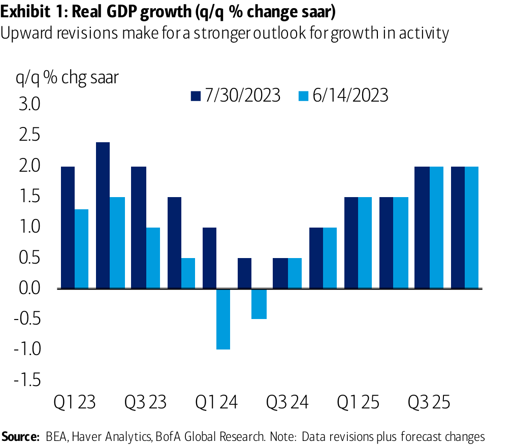
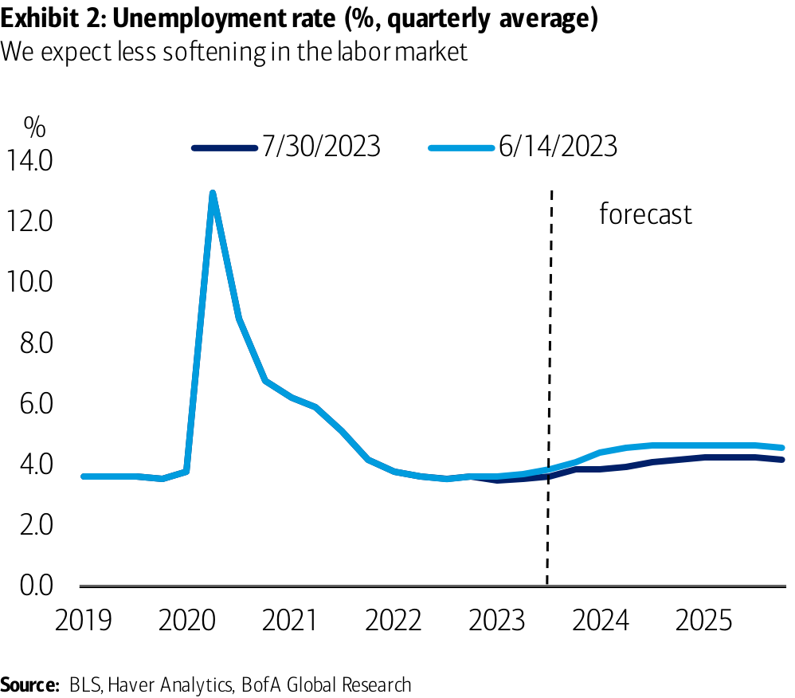
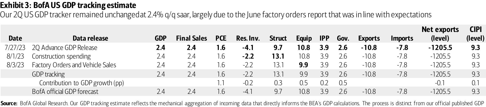
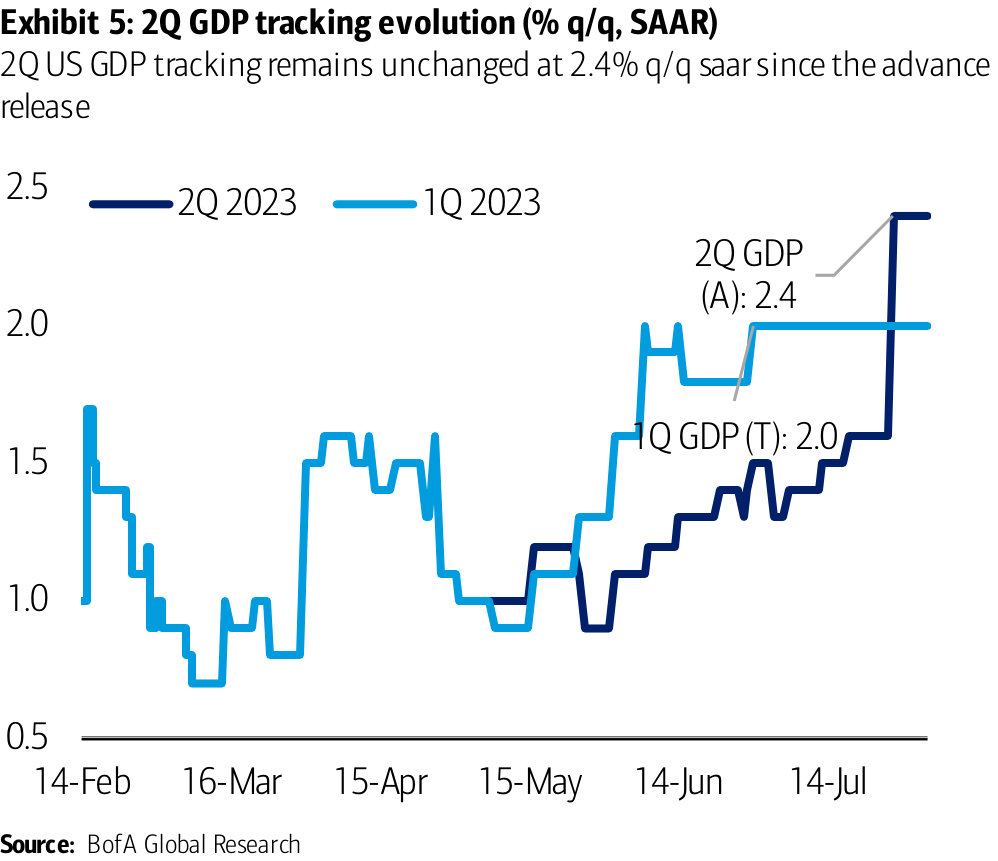
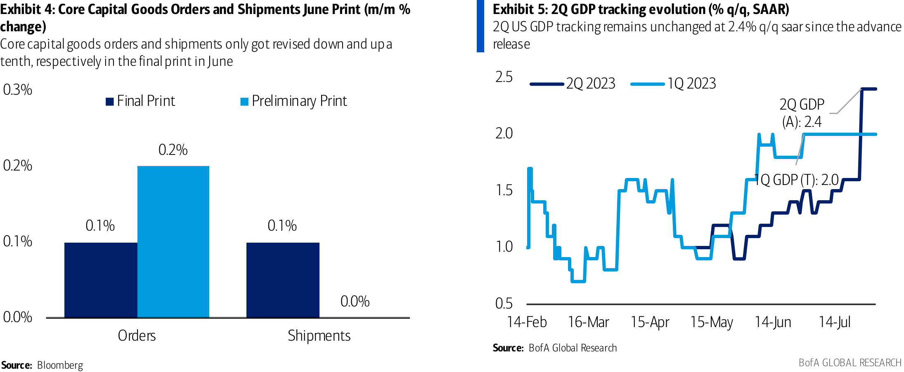
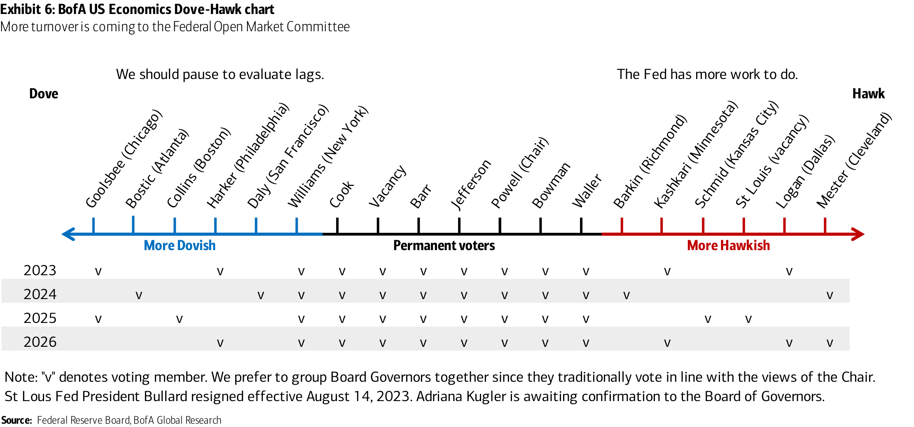
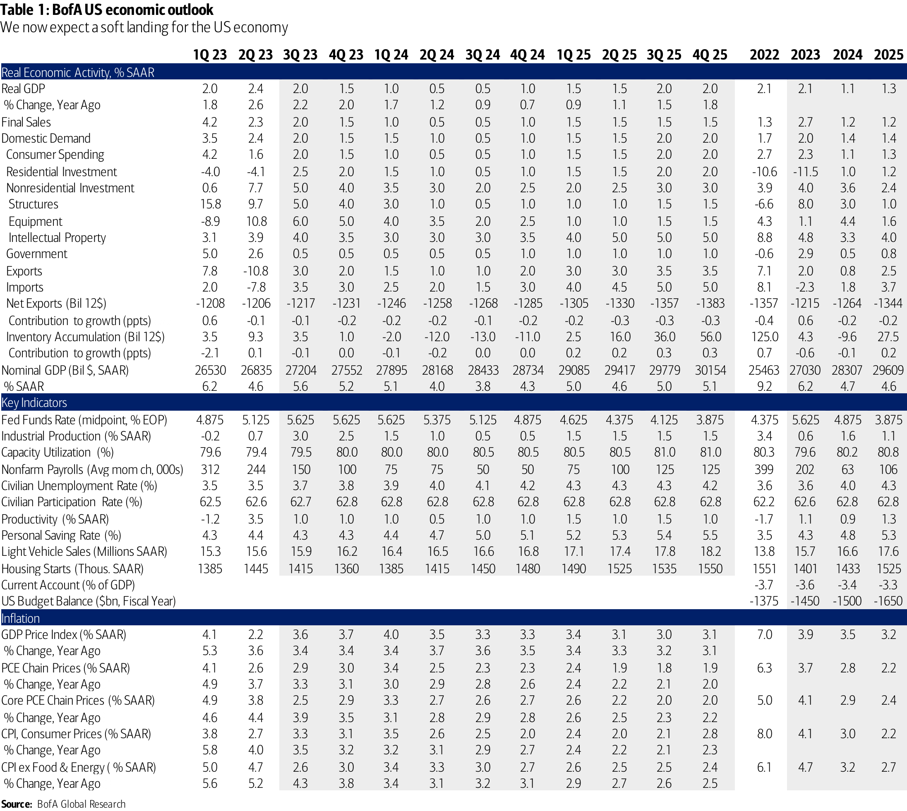
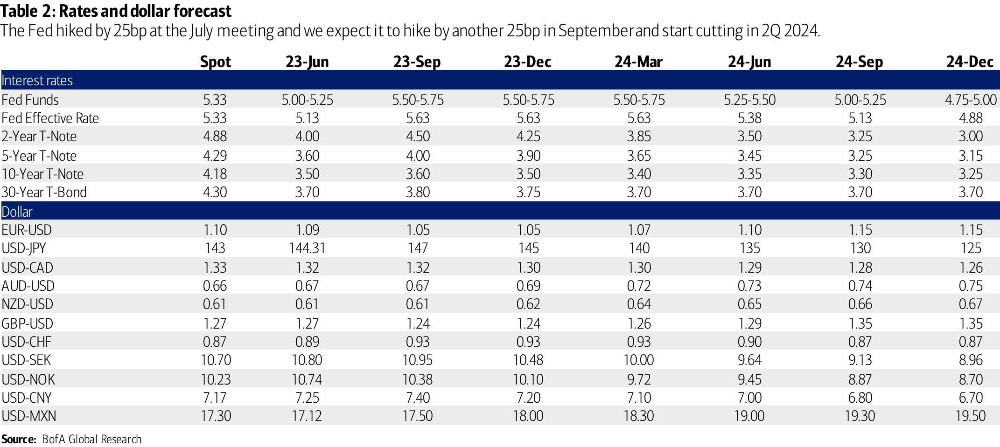
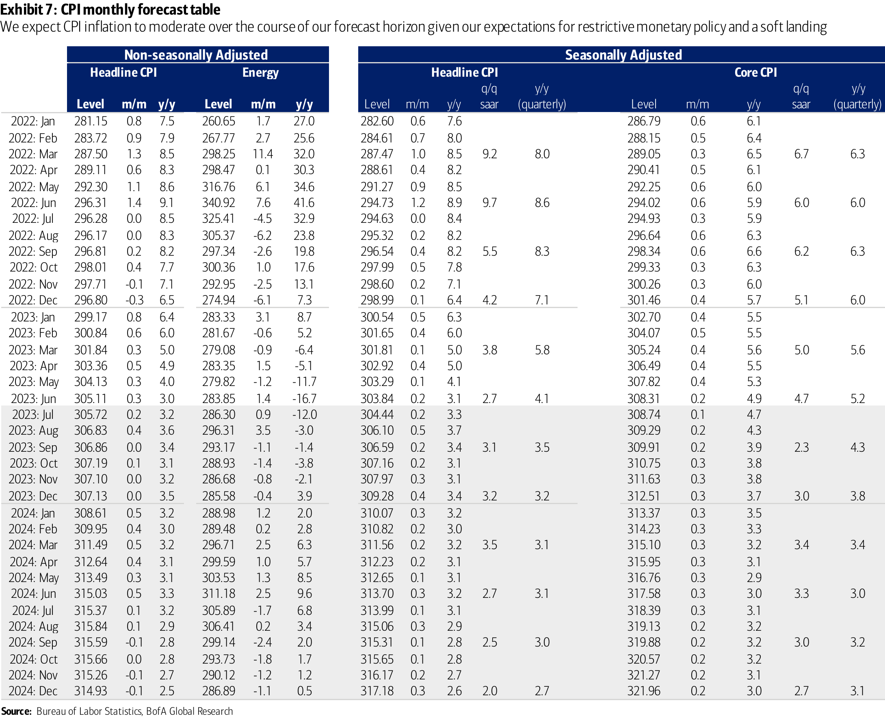

Unauthorized redistribution of this report is prohibited. This report is intended for
US Economic Weekly
We see a soft landing for the US economy
Key takeaways
• We revise our outlook in favor of a soft landing in the US economy. Previously we had
forecasted a mild recession in 1H 24.
• We take on the signal from recent data that point to diminishing price pressures amid
solid growth and low unemployment.
• We now only expect 75bp of rate cuts in 2024 and 100bp of cuts in 2025, well below market expectations.
We revise our outlook in favor of a soft landing
Recent incoming data has made us reassess our prior view that a mild recession in 2024 is the most likely outcome for the US economy (see the report US outlook: Imagine no recession, it’s easy if you try , 2 August 2023). Growth in economic activity over the past three quarters has averaged 2.3%, the unemployment rate has remained near all-time lows, and wage and price pressures are moving in the right direction, albeit gradually. Cyclically sensitive sectors have shown signs of stabilization.
We revise our outlook for the US economy in favor of a soft landing, where growth falls below trend in 2024, but remains positive throughout our forecast horizon. We forecast US GDP growth of 2.0% (4Q/4Q) this year, 0.7% in 2024, and 1.8% in 2025. This is
We still expect inflation to decelerate and remain on a path to 2.0%, but with a stronger forecast for activity and labor markets, inflation falls more gradually. We now have PCE inflation falling to 2.0% y/y in 2H 2025, about two quarters later than in our prior mild recession baseline. The four-quarter change in core PCE inflation is 3.5% in 2023 (unchanged), 2.8% in 2024 (up 0.4pp), and 2.2% in 2025 (up 0.1pp).
We look for the unemployment rate to rise to a peak of 4.3% in 1Q 2025, versus 4.7% in 4Q 2024 previously. The labor market should continue to cool and employment growth should moderate, but not as much as we forecasted previously.
Soft landings are unusual
While we are removing our outlook for a mild recession and replacing it with a soft landing, we acknowledge that we are moving to an outcome that has occurred infrequently in the post-war period. It is generally accepted that there have been three soft landings – mid-1960s, mid-1980s, and mid-1990s – and 11 recessions prior to the pandemic. In other words, three out of every four expansions end with declines in output, increases in unemployment, and reductions in personal spending that the National Bureau of Economic Research (NBER) has identified as recessionary episodes (the NBER is the official arbiter of recession dating).
====================================================================================================
A lot still has to go right. We are assuming that Fed policy has largely gotten its stance largely correct. This would be an error if lags in monetary policy tightening are long. We normally view them as around 18 months, though some evidence suggests they may be shorter. If lags are truly long, then we have revised in error and the prior slowdown in consumer spending remains in front of us. We still think consumer spending slows and growth drops below trend, but we are in effect saying most of the lags are behind us and the neutral policy rate is higher, meaning current policy is not as restrictive as we previously thought.
In addition, we could be underestimating the degree to which the rebound in labor supply is nearing its end. The rebound in labor supply in 2023 has been sharp – and unexpected to us – and has closed the gap between pre-COVID estimates of the labor force and the actual labor force, with migration and participation among prime working age women responsible for much of the increase this year. With participation running underestimating the degree to which labor markets could tighten further and wage growth could reaccelerate. A mild recession remains the most likely alternative scenario. A “ no landing ” scenario, with growth running 2.0% or better as trend productivity and output growth rise, remains the least likely outcome.
A cautiously cutting Fed
If our outlook proves true, this would be good news for the Fed. We still expect one additional 25bp rate hike in September for a terminal target range of 5.50-5.75%, though it may slip to November. We now expect the first rate cut in June 2024. We also expect balance sheet runoff (quantitative tightening) to end at the same time, though the Fed has mentioned that it may consider letting its balance sheet run off even after the cutting cycle begins, suggesting risks to a longer runoff period.
The main difference between our new forecast and prior forecast is in the pace of rate cuts, which we now think will come more slowly. We expect quarterly 25bp reductions in the policy rate for a total of 75bp of rate cuts in 2024 and 100bp of cuts in 2025.
Our Fed outlook also stands apart from market expectations of rate cuts. Markets, which must price in distributions of outcomes and not modal paths, are putting low weight on additional rate hikes, but more weight on a rapid cutting cycle should the economy weaken. In recent months prices on federal funds futures contracts have implied somewhere between 120-160bp of rate cuts in 2024. If our outlook proves accurate, many of these rate cuts would be taken out over time.
US Economic Weekly | 04 August 2023
Exhibit 1: Real GDP growth (q/q % change saar) Upward revisions make for a stronger outlook for growth in activity
Exhibit 2: Unemployment rate (%, quarterly average)
====================================================================================================
US GDP Tracking
2Q US GDP tracking unchanged at 2.4% q/q saar
Construction spending rose by a lower than expected 0.5% m/m in June but along with an upward revision in May. Residential spending increased over the month but was slightly lower than expected. This came along with an upward revision to May. Overall, this resulted in a small increase in our tracking estimate for 2Q residential investment. Non-residential construction spending rose by a small 0.1% m/m. This caused our 2Q structures tracking estimate to edge up slightly.
Core capital goods orders and shipments only got revised down and up a tenth, respectively, in the final print in June. In addition, manufacturing inventories for durable goods increased while non-durable goods decreased, offsetting each other to lead to a flat print this month. The vehicle sales print for July had a small downward revision for June in the medium and heavy trucks category. This feeds into our equipment tracker. After rounding, these prints together lowered our equipment tracking estimate slightly and left our inventory estimate unchanged for 2Q.
Overall, the data flow since our last report left our 2Q US GDP tracking estimate unchanged from the advance release at 2.4% q/q saar. Next week, June trade balance, wholesale inventories and July CPI and PPI will affect 2Q GDP tracking.
forecast. Boldface cells indicate where data have implications for tracking estimates.
US Economic Weekly | 04 August 2023
Exhibit 3: BofA US GDP tracking estimate Our 2Q US GDP tracker remained unchanged at 2.4% q/q saar, largely due to the June factory orders report that was in line with expectations
Exhibit 5: 2Q GDP tracking evolution (% q/q, SAAR)
Exhibit 5: 2Q GDP tracking evolution (% q/q, SAAR)
====================================================================================================
Data in the past week
Data in the past week (July 31 st – Aug 4 th ) The focus was on the ISM index, productivity, and factory orders
Date Time Indicator Period Actual Consensus Previous
7/31/23 9:45 Chicago Purchasing Managers Jul 42.8 43.5 41.5
8/01/23 9:45 S&P Global US manufacturing PMI Jul F 49.0 49.0 49.0
8/01/23 10:00 JOLTS Job Openings Jun 9582k 9600k 9616k
8/01/23 10:00 Construction Spending (mom) Jun 0.5% 0.6% 1.1%
8/01/23 10:00 ISM Manufacturing Jul 46.4 46.9 46.0
8/01/23 All day Total Vehicle Sales Jul 15.7M 15.8M 15.7M
8/02/23 7:00 MBA Mortgage Applications Jul 28 -3.0% — -1.8%
8/02/23 8:15 ADP Employment Jul 324k 190k 455k
8/03/23 8:30 Initial Jobless Claims Jul 29 227k 225k 221k
8/03/23 8:30 Nonfarm Productivity 2Q P 3.7% 2.2% -1.2%
8/03/23 8:30 Unit Labor Costs 2Q P 1.6% 2.5% 3.3%
8/03/23 9:45 S&P Global US services PMI Jul F 52.3 52.4 52.4
8/03/23 10:00 ISM Services Jul 52.7 53.1 53.9
8/03/23 10:00 Factory Orders Jun 2.3% 2.3% 0.4%
8/04/23 8:30 Change in Nonfarm Payrolls Jul NR 200k 209k
8/04/23 8:30 Private Payrolls Jul NR 180k 149k
8/04/23 8:30 Unemployment Rate Jul NR 3.6% 3.6%
8/04/23 8:30 Average Hourly Earnings mom Jul NR 0.3% 0.4%
8/04/23 8:30 Average Weekly Hours Jul NR 34.4 34.4
BofA Global Research, Bloomberg
Core views
Growth
•
We have revised our outlook for the US economy in favor of a soft landing, where growth falls below trend in 2024, but remains positive throughout our forecast horizon. We forecast US GDP growth of 2.0% (4Q/4Q) this year, 0.7% in 2024, and 1.8% in 2025. This is about 0.5pp and 0.7pp higher in 2023 and 2024 than we assumed previously.
Inflation
•
We now have PCE inflation falling to 2.0% y/y in 2H 2025, about two quarters later than in our prior mild recession baseline. Ourr expectations for the four-quarter change in core PCE inflation is 3.5% in 2023, 2.8% in 2024, and 2.2% in 2025.
Federal Reserve
•
We still expect one additional 25bp rate hike in September for a terminal target range of 5.50-5.75%, though it may slip to November. We now expect the first rate cut in June 2024 and quarterly 25bp reductions in the policy rate for a total of 75bp of rate cuts in 2024 and 100bp of cuts in 2025.
US Economic Weekly | 04 August 2023
====================================================================================================
Data in the week ahead
Monday, Aug 7
Tuesday, Aug 8
Trade Balance
Wednesday, Aug 9
Thursday, Aug 10
====================================================================================================
Consumer Price Index
Initial Jobless Claims
Monthly Budget Statement
Friday, Aug 11
Producer Price Index
====================================================================================================
University of Michigan Consumer Sentiment
====================================================================================================
Upcoming policy speakers
Exhibit 6: BofA US Economics Dove-Hawk chart More turnover is coming to the Federal Open Market Committee
====================================================================================================
Economic forecast summary
Table 1: BofA US economic outlook We now expect a soft landing for the US economy
====================================================================================================
Rates and dollar forecast
Rolling calendar of business indicators
Table 2: Rates and dollar forecast The Fed hiked by 25bp at the July meeting and we expect it to hike by another 25bp in September and start cutting in 2Q 2024.
====================================================================================================
CPI Forecast table
Exhibit 7: CPI monthly forecast table We expect CPI inflation to moderate over the course of our forecast horizon given our expectations for restrictive monetary policy and a soft landing
====================================================================================================